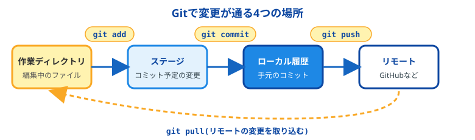
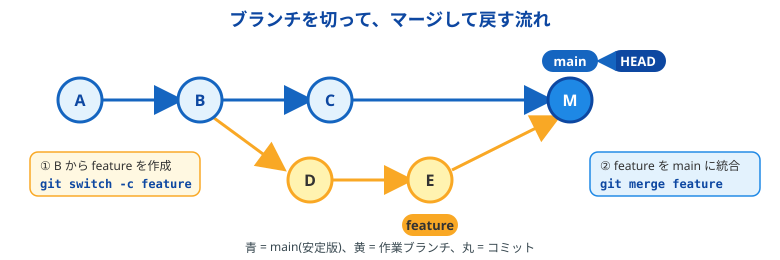
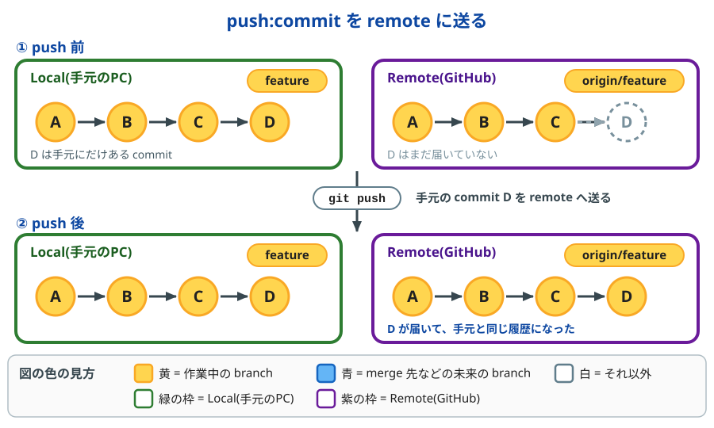
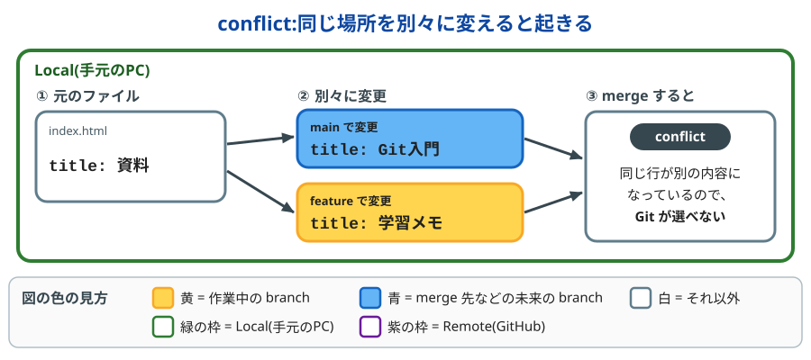
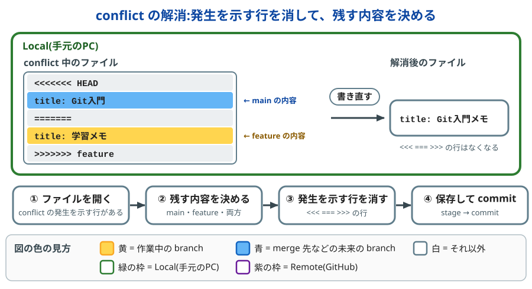
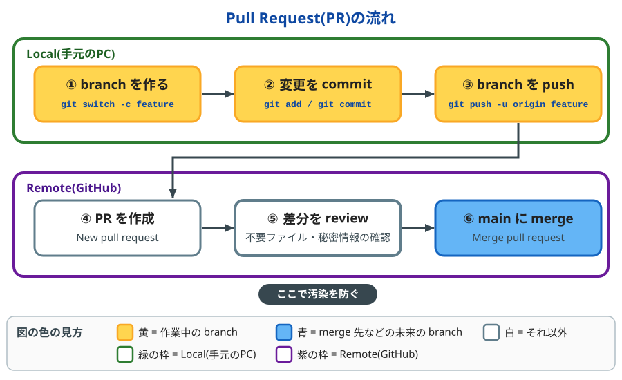
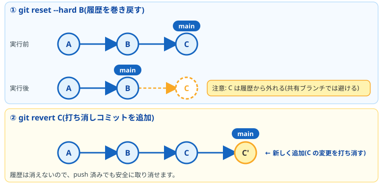
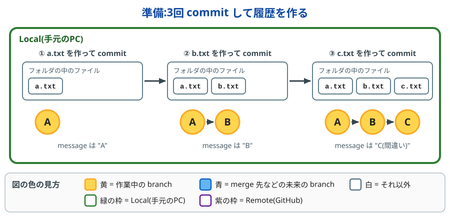
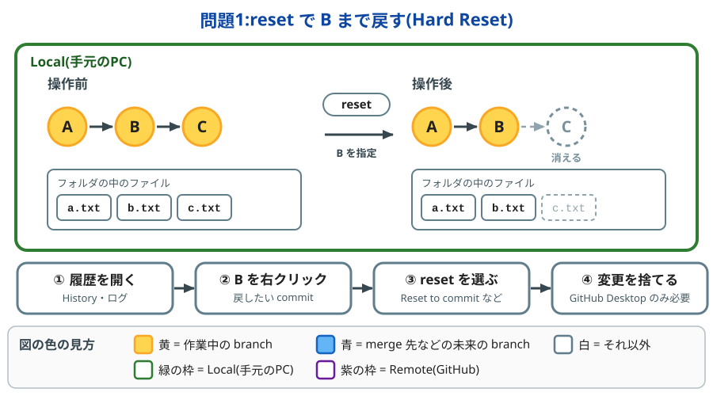
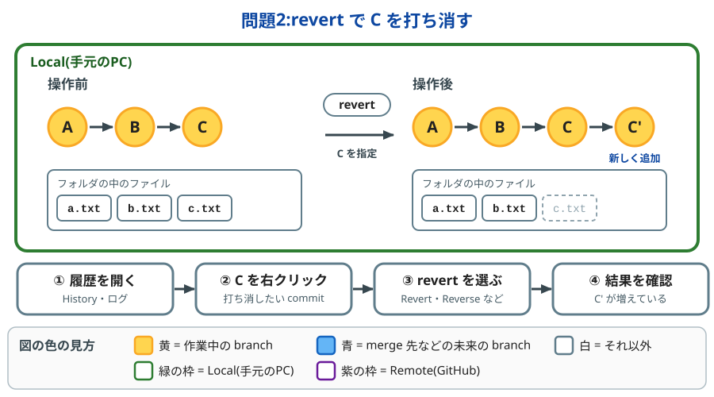

目次
- commit とは
- branch とは
- push とは
- conflict とは
- branch 汚染とは
- 安全に試すコツ
- 過去の commit に巻き戻す方法
- GUIツール(GitHub Desktop・SourceTree・TortoiseGit)の用語集
- 練習問題(reset と revert を GUI で試す)
1. commit とは
commit は、作業の途中経過を「セーブ」して、履歴に残すことです。ゲームのセーブのように、あとからその時点の状態に戻せます。commit を重ねると、変更の記録が順番に並んだ「履歴」になります。
各 commit には、見分けるための ID(hash)※ が自動で付きます。
※ hash とは、commit ごとに自動で付く、英数字の文字列です(例: a1b2c3d)。「背番号」のようなもので、巻き戻したいときに「この commit に戻す」と指定するのに使います。git log --oneline で確認できます。
変更は次の4つの場所を通ります。

git status # 今の状態を確認
git add ファイル名 # commit 対象にする(stage に載せる)
git commit -m "message" # 手元の履歴に記録する
git push # remote へ送る
git log --oneline # 履歴を一覧で見る
補足
git pull は、git fetch(remote の更新を取得するだけ)と git merge(手元に取り込む)をまとめた操作です。取り込む前に内容を確認したいときは、先に git fetch だけを実行します。
2. branch とは
branch は、履歴の流れを枝分かれさせて、別々に作業を進めるための仕組みです。元の流れ(main)に影響を与えずに、新機能の試作や修正を進められます。HEAD は「今自分がいる branch」を示す目印です。
使い方の基本は、main を安定版として保ち、作業は別の branch で行い、完成したら main に merge することです。

git branch # branch 一覧
git switch -c feature/timer # 新規作成して移動
git switch main # 移動
git merge feature/timer # 今の branch に merge
git branch -d feature/timer # merge 済みの branch を削除
補足
仕組みとしては、branch は commit に付けた名前(しおりのようなもの)です。ファイルを丸ごとコピーするわけではないので、作成は一瞬で軽く済みます。
補足
古い解説では、branch の移動に git checkout が使われています。現在は git switch(branch の移動)と git restore(ファイルの復元)に役割が分かれていて、こちらのほうが分かりやすいため、この資料ではこの2つを使っています。
3. push とは
push は、手元(local)の commit を remote(GitHub など)に送ることです。送られるのは commit 済みの内容だけで、commit していない変更は送られません。送る単位は branch です。

git remote -v # 送り先(origin)の URL を確認
git push -u origin feature/timer # 初めて送る branch。送り先を origin に設定する
git push # 2回目以降。今の branch を、設定済みの送り先へ送る
git push origin main # branch を指定して送る
origin は、remote につけられる標準の名前です。-u を付けて1回 push すると、以降は git push だけで送れます。
補足
push のあとに git status を実行して、up to date with 'origin/...' と表示されれば、手元と remote が同じ状態です。
注意
remote のほうが先に進んでいる(他の人が先に push した)と、push は rejected(拒否)されます。その場合は、先に git pull で remote の変更を取り込んでから、もう一度 push します。--force で無理に上書きしないでください。
4. conflict とは
conflict(コンフリクト)は、同じファイルの同じ場所を別々に変更したため、Git が「どちらを採用するか」を自動では決められない状態です。2人が同じ文章の同じ行を、別々に書き換えたときのようなものです。

- 起きるとき:
git mergeで別の branch を取り込むときや、git pullで remote の変更を取り込むときに起きます - 起きないとき: 別のファイルや、同じファイルの別の場所を変更していた場合は、Git が自動で merge します
conflict はエラーではなく、「ここは人が決めてください」という Git からの確認です。
conflict の解消方法
conflict が発生すると、Git は該当のファイルに、conflict の発生を示す行を書き込みます。この行を手がかりに、残す内容を決めます。
<<<<<<< HEAD
title: Git入門
=======
title: 学習メモ
>>>>>>> feature
| conflict の発生を示す行 | 意味 |
|---|---|
<<<<<<< HEAD 〜 ======= |
今いる branch(main)の内容 |
======= 〜 >>>>>>> feature |
merge してきた branch(feature)の内容 |
解消は、conflict の発生を示す行を消して、残す内容を決めることです。

- conflict が出たファイルを開く
- 残す内容を決める(
mainの内容、featureの内容、または両方を合わせた内容) - conflict の発生を示す行(
<<<<<<<、=======、>>>>>>>の3種類)を消す - 保存して、stage → commit で merge を完了する
git merge feature # CONFLICT と表示される
git status # conflict のファイルを確認
# ファイルを開いて、conflict の発生を示す行を消して保存
git add index.html # 解消したファイルを stage
git commit # merge を完了
GUIツールでは、次のように操作します。
| 手順 | GitHub Desktop | SourceTree | TortoiseGit |
|---|---|---|---|
| ① conflict のファイルを探す | Changes タブの conflicted files | ファイルを右クリック → Resolve Conflicts | ファイルを右クリック → TortoiseGit |
| ② 開いて直す | Open in エディタ名 | Launch External Merge Tool | Edit Conflicts |
| ③ 解消したと伝える | 自動で stage される | Mark Resolved | Resolved |
| ④ commit する | Commit merge | Commit | Git Commit |
補足
途中でやめたいときは、merge を取り消して元の状態に戻せます。GitHub Desktop は Abort merge、コマンドは git merge --abort です。
注意
SourceTree の Resolve Using 'Mine' / Resolve Using 'Theirs' は、ファイル全体をどちらか片方に置き換えます。conflict していない部分の変更も消えるので、画像などのバイナリファイルや、片方を丸ごと捨てるときだけ使ってください。
補足
conflict を減らすには、作業を始める前に git pull で最新の状態にして、同じファイルを同時に別々の人が編集しないようにします。
5. branch 汚染とは
branch 汚染は、本来入れたくないものが branch に混ざった状態です。よくある例は次のとおりです。
mainに直接、作りかけの変更を commit してしまった.vs/やLibrary/などの不要ファイルを commit した- パスワードやAPIキーなどの秘密情報を commit した
- 別の作業の commit が混ざったまま merge した
予防策
- 作業は必ず branch を切って行う
.gitignoreを最初に用意する- commit 前に
git statusとgit diff --stagedで中身を確認する - Pull Request(推奨):
mainへ直接 push せず、作業 branch を push して Pull Request(PR)を作り、差分を確認してから merge する。不要ファイルや秘密情報、別作業の commit の混入を merge 前に見つけられる
git switch -c feature/timer # 作業 branch を作る
git push -u origin feature/timer # branch を push
# GitHub 上で Pull Request を作成 → 差分を確認 → merge
Pull Request の流れは次の図のとおりです。

補足
GitHub の設定(branch 保護)で main への直接 push を禁止すると、Pull Request を必ず通すようにできます。うっかり main に push してしまう事故を、仕組みで防げます。
補足
.gitignore に書いたファイルは、まだ追跡されていない場合に限って無視されます。すでに commit してしまったファイルは、git rm --cached ファイル名 で追跡から外してから、commit し直します。
6. 安全に試すコツ
巻き戻しの前に、今の状態にバックアップ用の branch を作っておくと安心です。失敗してもすぐ元に戻せます。
git branch backup-before-reset
補足
バックアップ用の branch は、巻き戻しがうまくいったことを確認してから git branch -d backup-before-reset で削除します。
7. 過去の commit に巻き戻す方法
基本は、作業内容を過去の commit まで戻す(Hard Reset)か、打ち消す commit を作る(revert)のどちらかです。 まだ push していなければ Hard Reset、push 済みなら revert が目安です。
状況によって使うコマンドが変わります。
A. まだ commit していない変更を捨てる
git restore ファイル名 # ファイルの変更を破棄
git restore --staged ファイル名 # git add を取り消す(変更は残る)
git clean -fd # 追跡されていないファイルを削除
注意
git clean で消えたファイルは戻せません。事前に git clean -nd で、削除される対象を確認してください。
B. commit 済みだが、まだ push していない
git reset で、branch の指す位置を過去の commit まで戻します。
git log --oneline # 戻りたい commit の hash を調べる
git reset --soft HEAD~1 # 1つ前に戻る。変更は stage に残る
git reset --mixed HEAD~1 # 1つ前に戻る。変更は working directory に残る(既定)
git reset --hard a1b2c3d # 指定した commit に戻る。以降の変更は消える
| オプション | commit | stage | ファイルの中身 |
|---|---|---|---|
--soft |
取り消す | 残る | 残る |
--mixed |
取り消す | 取り消す | 残る |
--hard |
取り消す | 取り消す | 消える |
補足
HEAD~1 は「今の commit の1つ前」という意味です。HEAD~2 なら2つ前を指します。
注意
--hard は、working directory の変更も消します。迷ったときは、先に --soft か --mixed を使うか、バックアップ用の branch を作ってから実行してください。
C. すでに push 済み(共同作業中)
履歴を書き換えずに、「打ち消す commit」を新しく作る git revert を使います。
git revert a1b2c3d # その commit の変更を打ち消す commit を作る
git push
reset と revert の違いは次の図のとおりです。

注意
git reset --hard の後に git push --force で履歴を書き換える方法もあります。ただし、他の人の履歴と食い違って混乱を招くので、共有 branch では避けるのが基本です。自分専用の branch でやむを得ない場合は、--force より安全な git push --force-with-lease を使います。
D. 間違えて reset --hard してしまった
git reflog は、HEAD が動いた記録をすべて残しています。消えたように見える commit も、多くの場合ここから戻せます。
git reflog # 操作履歴を見る
git reset --hard HEAD@{2} # 戻りたい時点に復帰
注意
reflog の記録は一定期間(既定では約90日)で消えます。復元は早めに行ってください。
迷ったときの選び方
| やりたいこと | 使うコマンド |
|---|---|
| commit 前の変更を捨てたい | git restore |
| 自分だけの local の commit をやり直したい | git reset |
| push 済みの変更を取り消したい | git revert |
| 消してしまった履歴を探したい | git reflog |
8. GUIツールの用語集
GUIツールのボタンやメニューは、どれも Git のコマンド(CUI)と同じことをしています。
| 意味 | Git(CUI) | GitHub Desktop | SourceTree | TortoiseGit |
|---|---|---|---|---|
| commit 対象に選ぶ | git add |
変更ファイルのチェック | Stage | Add |
| 変更を記録する | git commit |
Commit | Commit | Git Commit |
| remote へ送る | git push |
Push origin | Push | Git Push |
| 更新情報だけ取得する | git fetch |
Fetch origin | Fetch | Git Fetch |
| 取得して取り込む | git pull |
Pull origin | Pull | Git Pull |
| branch を作る | git switch -c |
New Branch | Branch | Create Branch |
| branch を切り替える | git switch |
Current Branch で選ぶ | Checkout | Switch/Checkout |
| branch を統合する | git merge |
Merge into Current Branch | Merge | Merge |
| commit 前の変更を破棄する | git restore |
Discard Changes | Discard | Revert |
| 過去に戻す | git reset |
Reset to commit | Reset current branch to this commit | Reset to this |
| 打ち消しの commit を作る | git revert |
Revert Changes in Commit | Reverse commit | Revert change by this commit |
補足
GitHub Desktop でも reset できます。History タブで戻したい commit を右クリックし、Reset to commit を選びます。
- 戻した後の変更は、working directory に未 commit の状態で残ります(
git reset --mixedに近い動き) - 変更もいらない場合は、そのあと Discard Changes で破棄します(
--hardと同じ結果) - 戻せるのは、remote に push 済みの最新の commit より後の commit までです
- push 済みの commit を取り消したいときは、reset ではなく Revert Changes in Commit を使います
注意
メニュー名は、バージョンや表示言語で変わることがあります。
9. 練習問題(reset と revert を GUI で試す)
GitHub Desktop・SourceTree・TortoiseGit のどれでも、同じ流れで試せます。手順は、図と同じ言葉(History、commit、reset、revert)で書いています。
注意
練習用の新しい repository で試してください。本物のプロジェクトでは行わないでください。
準備:練習用の履歴を作る

- 練習用の新しい repository を作る
- その中に
a.txtを作って commit する(message はA) b.txtを作って commit する(message はB)c.txtを作って commit する(message はC(間違い))- History(ログ)に、A・B・C の3つが並んでいれば準備完了です
| 操作 | GitHub Desktop | SourceTree | TortoiseGit |
|---|---|---|---|
| repository を作る | File → New repository | File → New → Create Local Repository | 空のフォルダを右クリック → Git Create repository here |
| commit する | 変更ファイルにチェック → message を入力 → Commit to main | ファイルを Stage → message を入力 → Commit | フォルダを右クリック → Git Commit → message を入力 → Commit |
| History を見る | History タブ | メイン画面の履歴(ログ) | フォルダを右クリック → Show Log |
問題1:reset で B まで戻す
C(間違い)の commit を、なかったことにします。目標は、a.txt と b.txt だけが残る状態(Hard Reset)です。

| 手順 | GitHub Desktop | SourceTree | TortoiseGit |
|---|---|---|---|
| ① 履歴を開く | History タブ | メイン画面の履歴 | Show Log |
| ② B を右クリック | History の commit B を右クリック | 履歴の commit B を右クリック | ログの commit B を右クリック |
| ③ reset を選ぶ | Reset to commit | Reset current branch to this commit → Hard を選ぶ | Reset to this → Hard を選ぶ |
| ④ 変更を捨てる | Changes タブで Discard All Changes | 不要(Hard で消える) | 不要(Hard で消える) |
確認すること:History から C が消え、フォルダから c.txt もなくなっています。
補足
GitHub Desktop の Reset to commit は、戻した後の変更を working directory に残す動きです。そのため、c.txt を消すには④で変更を捨てます。
問題2:revert で C を打ち消す
履歴を消さずに、C の内容を打ち消す commit(C')を作ります。目標は、History に A・B・C・C' が残り、c.txt だけがフォルダから消える状態です。
問題1のあとは C が消えているので、新しい repository で準備をやり直してから始めます。

| 手順 | GitHub Desktop | SourceTree | TortoiseGit |
|---|---|---|---|
| ① 履歴を開く | History タブ | メイン画面の履歴 | Show Log |
| ② C を右クリック | History の commit C を右クリック | 履歴の commit C を右クリック | ログの commit C を右クリック |
| ③ revert を選ぶ | Revert Changes in Commit | Reverse commit | Revert change by this commit |
| ④ 結果を確認 | History に C' が増えている | History に C' が増えている | History に C' が増えている |
確認すること:History に C' が増え、C は残ったままです。フォルダから c.txt はなくなっています。
補足
ツールによっては、revert の途中で commit の確認画面が開きます。その場合は、そのまま commit まで進めてください。
注意
メニュー名は、バージョンや表示言語で変わることがあります。見つからないときは、commit を右クリックしたメニューを確認してください。
2つの違い
| reset | revert | |
|---|---|---|
| 履歴 | C が消える | C は残り、C' が増える |
| 向いている場面 | まだ push していないとき | push 済みのとき |